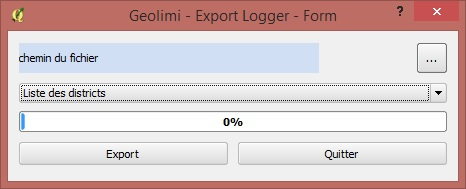
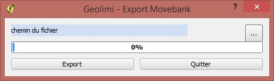

l'export des données
Il est possible d’exporter les données de la base à destination du logger ou de Movebank. L’export n’est pas direct, il se fait sous forme d’un fichier CSV.
Pour Logger Analyser

L’export pour Logger Analyser se fait en accédant au menu export et en choisissant pour Logger Analyser. Une fois la fenêtre ouverte, il faut définir le chemin du dossier où sera enregistré le fichier.
Ensuite nous pouvons filtrer les districts, pour Ré ou pour Moëze.
Il ne reste plus qu’à exporter et à importer le fichier choisit dans le logger.
Pour Movebank

L’export pour Movebank se déroule de la même manière. Une fois la fenêtre ouverte, il faut définir le chemin du dossier où sera enregistré le fichier.
Puis enregistrer le fichier dans le dossier choisit.
Il faudra peut-être supprimer le fichier existant dans Movebank pour importer le nouveau au cas où l’écrasement ne se fasse pas tout seul.